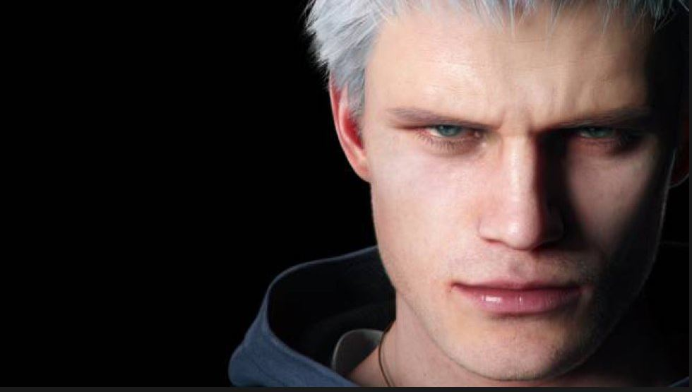
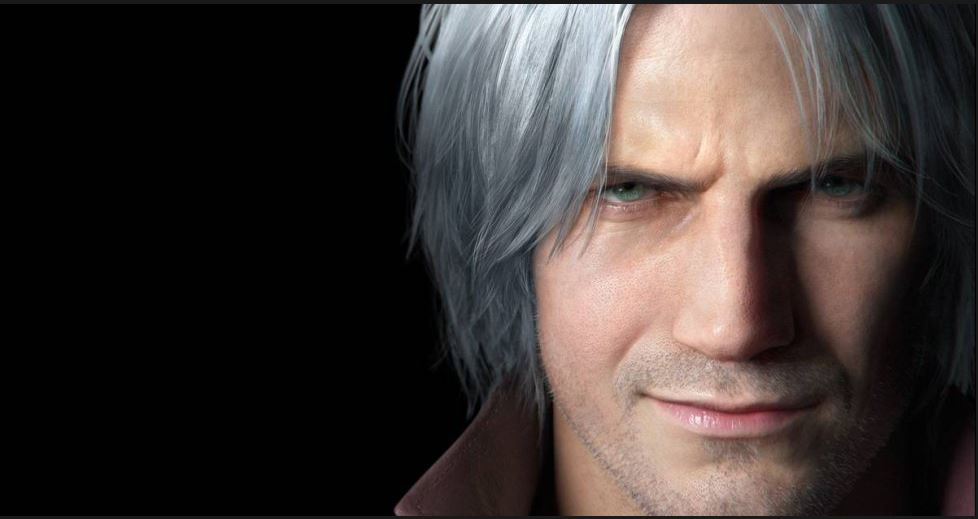
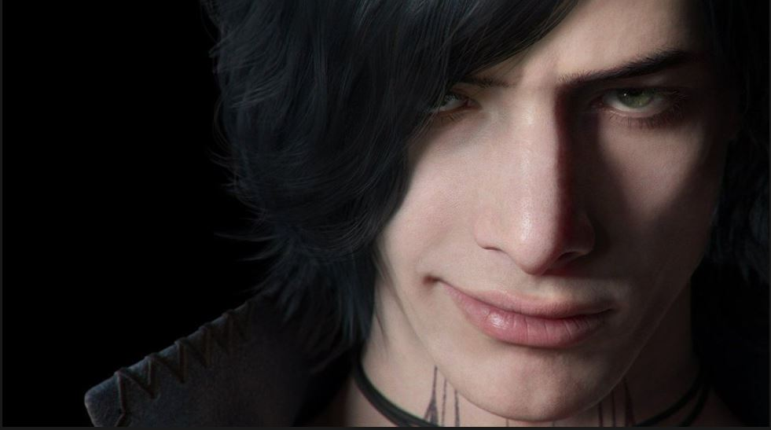
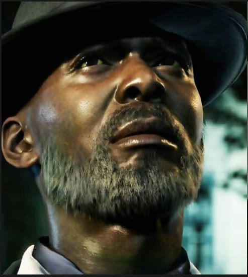
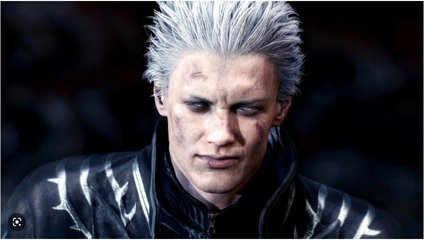
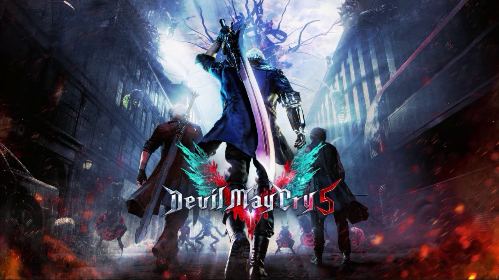

Devil May Cry 5 es un videojuego perteneciente al genero hack and slash, desarrollado y
publicado por la empresa Capcom. Fue lanzado el 8 de marzo de 2019. para las pltaformas
PlayStation4,Xbox One y Steam.
3
Historia
Devil May Cry 5 se lleva a cabo despues de los acontecimientos de Devil May Cry 4
presentando a un Dante y Nero notablemente mayores.Se muestra que Nero ahora está trabajando
al estilo de la agencia de Dante llamada Devil May Cry, y tiene su brazo demoníaco, Devil Bringer, cortado por un asaltante desconocido.
Él recibe una prótesis robótica de Nico, una artesana experta, y nieta de la mujer que creó las icónicas pistolas de Dante: Ebony & Ivory.
Nero jura venganza contra el hombre que le cortó el brazo.
Personajes principales
Nero
Dante
V
Morrison
Vergil
Nero
El protagonista pricipal de DevilMayCry4 sera de nuevo la gran estrella de esta entrega
aunque debera aprener a vivir sin su brazo demoniaco.Un misterioso encapuchado
le arrancara el brazo y Nero buscara darle caza y vengarse

Dante
Dante esta de vuelta, como no.Tan chistoso como siempre. Sera contratado
por un nuevo y misterioso personaje,V,para cazar varios demonios y no tardara
que hay algo detras de ese contacto

V
El nuevo y misterioso personaje jugable que se acercara a Dante con intenciones ocultas
Un poeta que siempre viaja con un baston con el que invoca a tres criaturas distintas en los combates
segun lo requiera la batalla

Morrison
Este personaje de la serie anime de la franquicia es el responsable
de dar nuevo contratos a Dante. En el juego cambiara de aspecto por completo

Vergil
Reaparece en esta entrega como un encapuchado para recuperar yamato
quitandole el Devil Bringer a su hijo,ahora bajo una nueva aparencia demoniaca
y con su seudonimo URIZEN es revelado como el antagonista principal de DMC5

Desarrollo
El juego esta dirigido por el veterano de la serie Hideki Atsuno Itsuno, quien explica que se ejecuta con el motor RE,
para la voz y captura de movimiento para Dante y Neo se contaron con los actores Ruben Landgon y Johnny Yong Bosch.
La banda sonora del juego esta compuesta por Casey Edwards, Cody Matthew Johnnson y Jeff Rona y el desarrollo de personajes
esta hecho por Tatsuya Yoshikawa

A continuacion les presentaremos el trailer del juego, esperamos que sea de su agrado.
Debido al exito del lanzamiento se programa un ESPECIAL EDITON para el 20 de Enero de 2020, el cual contendra
al personaje mas querido por l comunida de DmC5, Vergil estara disponible con 20 misiones,el nuevo modo palacio sangriento,modo legendario
caballero oscuro,audio 3D, seguimiento de rayos, velocidad de fps aumentada y tiempos de carga reducidos.
Si quieres comprar una copia original del juego y mas contenido adicional abajo dejo un enlace para que puedas entrar a Steam donde tambien podras jugar junto a otros jugadores
haz Click aqui y juega este maravilloso juego